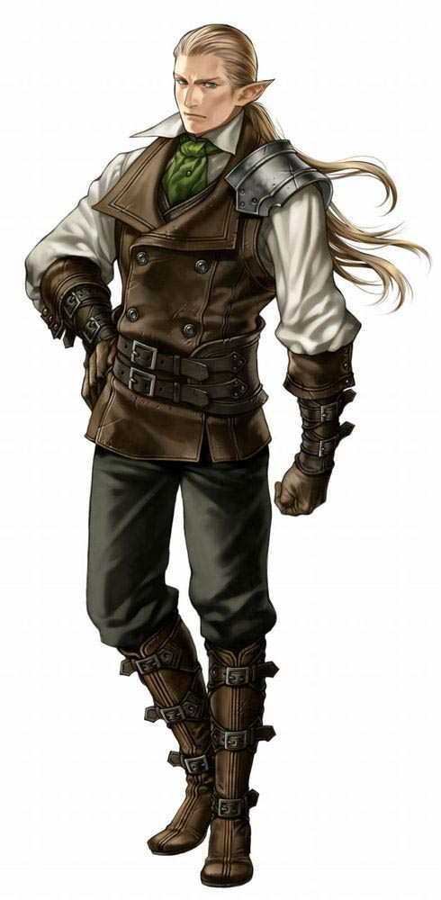
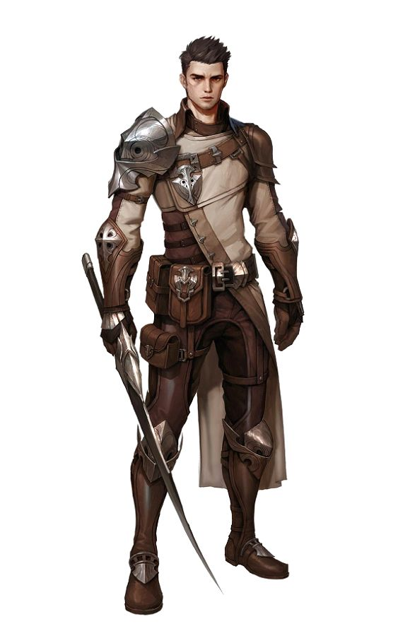
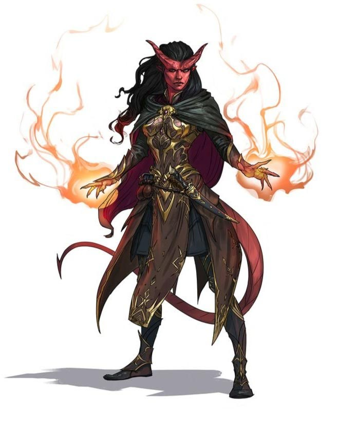

| Эльфы
Эльфы — это волшебный народ, обладающий неземным изяществом, живущий в мире, но не являющийся его частью. Они живут в местах, наполненных воздушной красотой, в глубинах древних лесов или в серебряных жилищах, увенчанных сверкающими шпилями и переливающихся волшебным светом. Там лёгкие дуновения ветра разносят обрывки тихих мелодий и нежные ароматы. Эльфы любят природу и магию, музыку и поэзию, и всё прекрасное, что есть в мире. |
 |
|---|---|
| Дварфы
Полные древнего величия королевства и вырезанные в толще гор чертоги, удары кирок и молотков, раздающиеся в глубоких шахтах и пылающий кузнечный горн, верность клану и традициям и пылающая ненависть к гоблинам и оркам — вот вещи, объединяющие всех дварфов. |
 |
| Люди
В большинстве миров люди — это самая молодая из распространённых рас. Они поздно вышли на мировую сцену и живут намного меньше, чем дварфы, эльфы и драконы. Возможно, именно краткость их жизней заставляет их стремиться достигнуть как можно большего в отведённый им срок. А быть может, они хотят что-то доказать старшим расам, и поэтому создают могучие империи, основанные на завоеваниях и торговле. Что бы ни двигало ими, люди всегда были инноваторами и пионерами во всех мирах. |
 |
| Тифлинги
Быть тифлингом — значит постоянно натыкаться на пристальные взгляды и перешёптывания, терпеть страдания и оскорбления, видеть страх и недоверие в глазах каждого встречного. Беда в том, что тифлинги знают причину этого — договор, заключённый много поколений назад и позволивший Асмодею — владыке Девяти Преисподних — внести вклад в их родословную. Такая внешность и природа — не их вина, а последствие древнего прегрешения, расплачиваться за которое предстоит им, их детям, и детям их детей. |
 |
{kind=link}
{kind=link}
{kind=link}